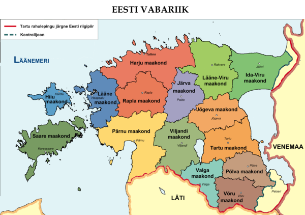
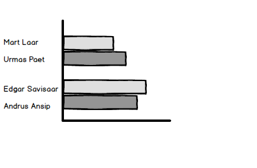

Häälte jagunemine erakondade lõikes
| Erakond | Häälte arv |
|---|---|
| Eesti Reformierakond | 164 255 |
| Eesti Keskerakond | 134 124 |
| Erakond Isamaa ja Res Publica Liit | 118 023 |
| Sotsiaaldemokraatlik Erakond | 98 307 |
| Erakond Eestimaa Rohelised | 21 824 |
| Eestimaa Rahvaliit | 12 184 |
| Vene Erakond Eestis | 5 029 |
| Erakond Eesti Kristlikud Demokraadid | 2 934 |
| Eesti Iseseisvuspartei | 2 571 |
| Ükskkandidaadid | 15 822 |
Häälte jagunemine piirkondade lõikes
Häälte jagunemine kandidaatide lõikes
| Kandidaat | Häälte arv |
|---|---|
| Edgar savisaar | 3,559 |
| Andrus Ansip | 3,043 |
| Mihhail Stalnuhhin | 1,838 |
| Urmas Paet | 1,708 |
| Mart Laar | 1,530 |
| Sven Mikser | 1,450 |
| Keit Pentus | 1,359 |
| Jüri Ratas | 1,207 |
| Urmas Kuuse | 1,189 |
| Kaja Kallas | 1,147 |
| Taavi Rõivas | 1,145 |
| Igor Gräzin | 1,060 |
| Juhan Parts | 1,022 |
| Deniss Boroditš | 1,006 |
Hääletustulemused reaalajas
